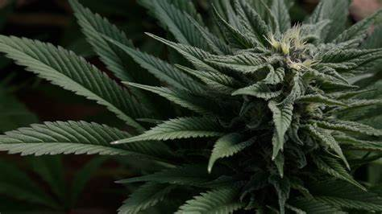

La marihuana es una droga psicoactiva obtenida de la planta Cannabis. Contiene compuestos activos como el tetrahidrocannabinol (THC) y el cannabidiol (CBD), que afectan el sistema nervioso central. El THC es responsable de los efectos eufóricos y alteradores de la mente. Se puede consumir fumando los cogollos secos, vaporizando aceites, en alimentos (como brownies) o en forma de tinturas y cápsulas. En algunos lugares su uso medicinal está permitido, especialmente para tratar dolores crónicos, náuseas o falta de apetito en pacientes con cáncer o VIH. Sin embargo, su uso recreativo puede derivar en dependencia psicológica. Existen diferentes variedades de cannabis (índica, sativa e híbridas) que producen efectos diferentes. La marihuana también contiene alquitrán y otras sustancias químicas cuando se quema, similares a las del tabaco, lo cual puede afectar los pulmones. El contenido de THC ha aumentado con los años, incrementando los riesgos asociados. Algunos consumidores la mezclan con otras drogas, elevando su peligrosidad. Su consumo a edades tempranas está asociado a trastornos del desarrollo cerebral.
Los efectos inmediatos incluyen relajación, percepción alterada del tiempo y el espacio, risas espontáneas, mayor sensibilidad a los colores y sonidos, y aumento del apetito. Algunas personas experimentan ansiedad, paranoia o confusión. La coordinación motora y la capacidad de reacción pueden verse reducidas, lo que aumenta el riesgo en la conducción. El THC afecta el hipocampo, lo que puede dificultar la formación de nuevos recuerdos y la concentración. El consumo frecuente puede producir tolerancia, lo que lleva a aumentar las dosis. En algunos casos, el consumo crónico puede afectar la motivación, el rendimiento académico o laboral. Hay evidencia de que el uso prolongado puede alterar la estructura cerebral, especialmente en adolescentes. Puede causar irritación en los ojos, sequedad bucal y episodios psicóticos en individuos vulnerables. La mezcla con alcohol potencia los efectos depresores. En mujeres embarazadas puede afectar el desarrollo del feto. Algunas personas desarrollan una dependencia psicológica. En ciertos casos, se han reportado síndromes de abstinencia leves. Los efectos varían según la dosis, el método de consumo y la susceptibilidad individual del usuario.
El consumo frecuente de marihuana puede derivar en dependencia psicológica, lo que significa que el usuario siente la necesidad de consumir para relajarse o disfrutar. A largo plazo, puede afectar la memoria, la capacidad de aprendizaje y la atención. En adolescentes, hay estudios que relacionan su uso con una reducción del coeficiente intelectual. También puede provocar alteraciones en el estado de ánimo, como depresión o ansiedad persistente. En personas con predisposición genética, puede desencadenar esquizofrenia u otros trastornos psicóticos. La irritación pulmonar es común en consumidores que fuman, y puede derivar en bronquitis crónica. Las habilidades motoras reducidas afectan la conducción, aumentando los accidentes. El uso durante el embarazo puede afectar el desarrollo cerebral del bebé. Socialmente, puede llevar al aislamiento o a relaciones conflictivas. Puede provocar problemas económicos si interfiere con el trabajo. Aunque no se considera físicamente adictiva, el síndrome de abstinencia puede incluir insomnio, irritabilidad y pérdida de apetito. Su consumo puede ser un factor de entrada a otras drogas más fuertes en algunos contextos. En ciertos países, su posesión aún es penalizada, lo que puede traer consecuencias legales. El uso excesivo puede disminuir la motivación y causar una especie de apatía general conocida como 'síndrome amotivacional.
Es la droga ilegal más consumida en el mundo. En muchos países se ha legalizado para uso médico o recreativo. Aun así, su abuso tiene riesgos.
Contacta con profesionales de salud o visita sindrogas.com para obtener asistencia.
